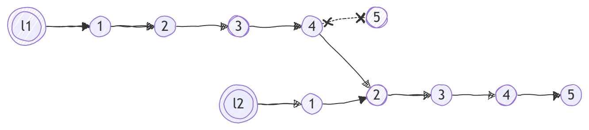
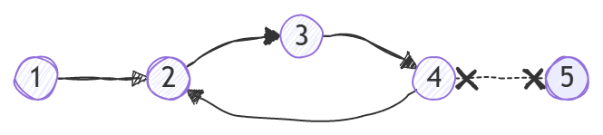

<meta charset="utf-8" />
<style> hint, drill {display: none;} </style>
<script src="../md-components.js"></script>

<import-hints from="./java-hints.html"></import-hints>

<!---------------------------------------------------------->

<code-drills
    heading="Linked list"
    log-level="W"
>
</code-drills>

<!---------------------------------------------------------->

<drill lang="java" id="list">
Integer[] numbers = new Integer[] {1, 2, 3, 4, 5};

$Node$$&lt;Integer>$ l1 = listFromArray(numbers);       {1}
    ~r hr generic-type
    ^$
$Node$$&lt;Integer>$ l2 = listFromArray(numbers);       {1}
    ~r hr generic-type
    ^$

print(l1);          // [1, 2, 3, 4, 5]
print(l2);          // [1, 2, 3, 4, 5]
print(l1 == l2);    // $false$
    ^? ~g ht result

l1.getNext().getNext().getNext().setNext(l2.getNext());

print(l1);          // $[1, 2, 3, 4, 2, 3, 4, 5]$
    ^? ~g ht result
$!html:w-h-r+ 
print(l2);          // $[1, 2, 3, 4, 5]$   
    ^? ~g ht result
</drill>


<!---------------------------------------------------------->

<drill lang="java" id="getCount()">
pubic static int getCount(Node&lt;Integer> lst) {
    int count = 0;
    $Node$$&lt;Integer>$ node = lst;
        ~r hr generic-type
        ^$
    while (node != null) {
        count++;
        node = node.$getNext$$()$;
            ~r ht func-call
            ^$
    }
    return count;
}
</drill>

<!---------------------------------------------------------->

<drill lang="java" id="getMax()">
public static int getMaxValue(Node&lt;Integer> lst) {
    int max = Integer.MIN_VALUE;
    while (lst != $null$) {
            ^... ~o ht implement
        max = Math.max(max, $lst$$.getValue()$);
            ~r ht node-not-value
            ^$
        lst = lst.getNext();
    }
    return max;
}

public static NodecInteger> getMaxNode(Node&lt;Integer> lst) {
    $Node$$&lt;Integer>$ max = lst$$;
        ~r hr generic-type
        ^$
        ^.getValue() ~r ht value-not-node       {+}
    while ($lst != null$) {
            ^... ~o ht implement
        if (lst.getValue() > $max$$.getValue()$) {
                ~r ht node-not-value
                ^$
            max = lst;
        }
        lst = lst.getNext();
    }
-    return max;        {1}
$} $                    {1}
    ~r ht return-is-missing

print(getMaxValue(null));       // $-2147483648$
    ^? ~g ht result
print(getMaxNode(null));        // $null$
    ^? ~g ht result
</drill>

<!---------------------------------------------------------->

<drill lang="java" id="findNode()">
public static Node&lt;Integer> findNode($Node$$&lt;Integer>$ node, int value) {
        ~r hr generic-type
        ^$
    while (node != null) {
        if (value $==$ node.getValue()) {
                ^= ~r ht assign-vs-comp
            return node;
        }
        node = node.$getNext$$()$;
            ~r ht func-call
            ^$
    }
-    return null;       {1}
$} $                    {1}
    ~r ht return-is-missing

Node&lt;Integer> list = listFromArray(new Integer[] {1, 2, 3, 4, 5});
Node&lt;Integer> node = findNode(list, 3);

print(list);        // [1, 2, 3, 4, 5] 
print(node);        // $[3, 4, 5] - Why three number?$
    ^? ~g ht result

node.setNext(null);

print(node);        // $[3]$
    ^? ~g ht result
print(list);        // $[1, 2, 3] - Where are numbers [4, 5]?$
    ^? ~g ht result
</drill>

<!---------------------------------------------------------->

<drill lang="java" id="endless-list">
Node&lt;Integer> l1 = listFromArray(new Integer[] {1, 2, 3, 4, 5});

l1.getNext().getNext().getNext().setNext(l1.getNext());
print(l1);      // $❌ Runtime crash!!! Endless linked list$
    ^? ~g ht result
$!html:w-h-r+ 
</drill>

<!---------------------------------------------------------->

<drill lang="java" id="addToAllNodes()">
public static $void $$addToAllNodes$($Node$$&lt;Integer>$ node, int num) {
        ^$
        ~r hb return-type
        ~r hr generic-type  {+}
        ^$
    while (node != null) {
        node.$setValue$$($node.getValue() + num$)$;
            ~r ht func-call
            ^ = $ ~t
            ^$
-        node = node.getNext();     {1}
    $} $                            {1}
        ~r ht endless-loop
}

Node&lt;Integer> lst = listFromArray(new int[] {1, 2, 3, 4, 5});

addToAllNodes(lst, 100);
print(list);                // $[101, 102, 103, 104, 105]$ 
    ^? ~g ht result
</drill>
